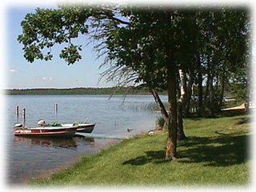
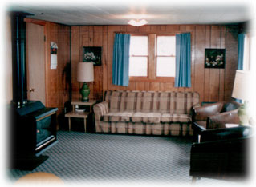
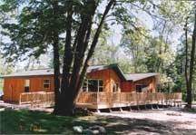

我饿-_-
人生在世，人不贪吃枉少年啊

粤菜精品<一>清蒸鱼，肉滑味鲜

粤菜精品<二> 梅菜扣肉，肉滑不腻

粤菜精品<三> 广东烧鸭，皮香肉香

铁板八爪鱼

烧汁煎酿蛇皮
人生在世，人不贪吃枉少年啊
今天到Danny那帮忙了，忙是不在话下，就是系统性差了点，希望Jun Bo吸取经验，好好改善，老板好，做小的也好：-）。今天的partner是Laos的Lenk,也挺好的，不过我还是更喜欢Wendy搭档，aunt May 有八婆8人组，我这有三八2人组*_^


这个周末玩得那个叫累啊，小叔叔带christina从加州过来玩，我第一次感觉到了什么叫如花美眷，似水流年哟。我这把骨头都被她折腾断了。为了百般诱惑她学中文我可是出尽了法宝，可惜效果好像不尽如人意哪-_-
有钱啦，买了吃的，喝的，穿的，送的，又没钱啦U_U
有一阵子没一个人在家休息了，今天我吃了一个粽子，一盒我家荣誉出品的菜饭，半盒Cub food的葡萄，2大杯Michelle咖啡，看来我不需要休息啊，吃成这样，吓得我啊-_-





今天到Danny那帮忙了，忙是不在话下，就是系统性差了点，希望Jun Bo吸取经验，好好改善，老板好，做小的也好：-）。今天的partner是Laos的Lenk,也挺好的，不过我还是更喜欢Wendy搭档，aunt May 有八婆8人组，我这有三八2人组*_^ 后天uncle Steve要来，我们准备好好招呼他，带他去吃最好的，当然，have the check的时候要及时开溜，god bless you, uncle steve, remember to have your credit card with you *_* 1个星期没做瑜珈，惨了,拜四想和Michelle去lifetime,就是怕到时懒得去，要靓要食，要食-_- 顺便说声，上次和Danny去的outback steak house 实在是*%$$%&^$#$。 Bloomin' Onion 和 Rockhampton Rib-Eye一定是食家首选！
这个周末玩得那个叫累啊，小叔叔带christina从加州过来玩，我第一次感觉到了什么叫如花美眷，似水流年哟。我这把骨头都被她折腾断了。为了百般诱惑她学中文我可是出尽了法宝，可惜效果好像不尽如人意哪-_- Uncle Steve周末也特意从Pennsylvania过来参加小一的典礼，周末我们把船拉到湖边坐船去了，uncle 和christina一左一右坐镇船头，我顿时感觉到船身严重向uncle那边倾斜，于是我悄悄地坐到了和他相反的右边以期取得平衡*_^ 那天的天气呀，真叫个风和日丽，暖风醉人。于是乎我们乘风破浪，左拿Pop,右抓chips,笑傲江湖。没想到一辆大船开过，一船激起千层浪，一个大浪向我们迎头打来，3秒过去，坐镇船头的那2员大将顿成落汤鸡。Christina立即被小叔叔抓回来用毛巾严严裹住，剩下Uncle一人留守船头，在检查手机完毕无事后, 继续穿着他那湿淋淋的大布裤笑对春风*_*
{kind=link}
{kind=link}
{kind=link}